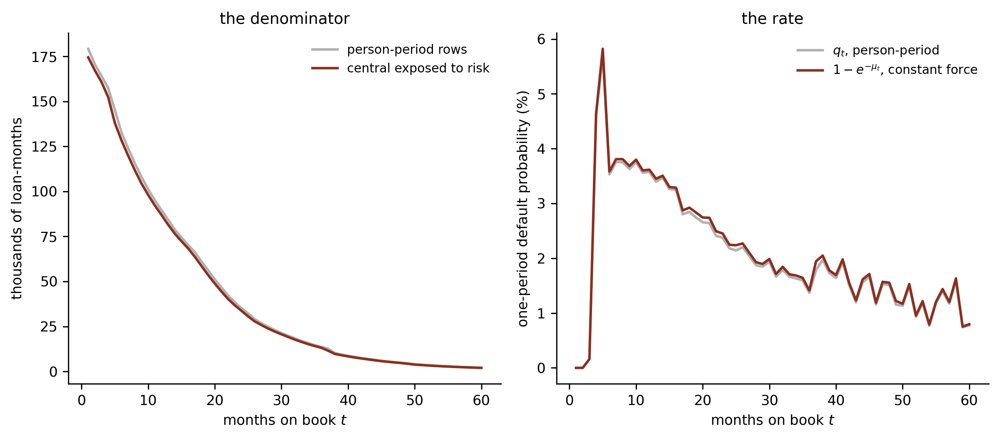
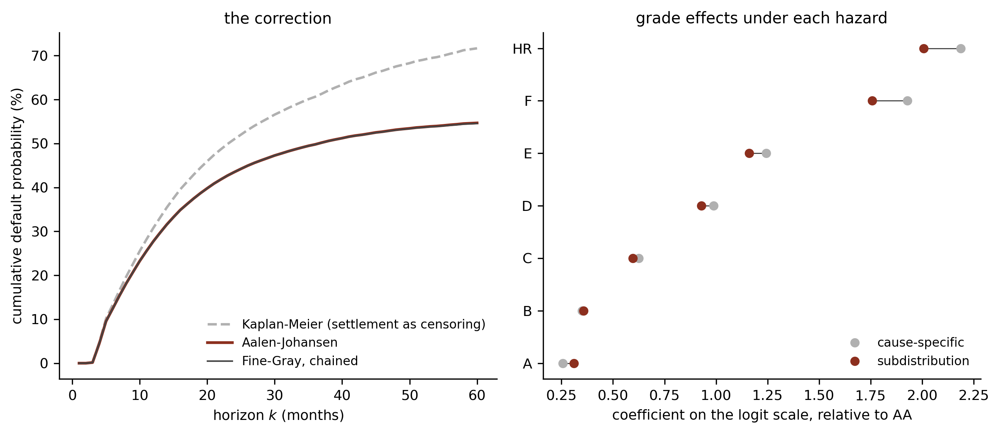

Credit Lecture S2: Survival Analysis from Insurance to Credit
Deep Learning for Actuarial Modelling: a credit risk companion
Author
Mario Ervedosa
Published
September 1, 2026
Abstract
Lecture S1 built a discrete hazard model for the Bondora loan book without once using actuarial notation, which is an odd way for an actuary to arrive at survival analysis. This lecture supplies the translation. It sets out where the subject came from, maps the four vocabularies that describe the same mathematics, and then does the two pieces of work the mapping makes possible: it shows that the central exposed to risk and the person-period expansion are the same denominator computed under different fractional-period assumptions, differing here by 3.5 per cent, and it carries out the Fine-Gray correction that S1 measured and deferred. The value of this lecture sits in the correspondence, so it is built around one table, one Lexis diagram and two computations.
1 Two traditions, one mathematics
An actuary meeting survival analysis for the first time has the disorienting experience of recognising every idea and none of the symbols. Lecture S1 estimated a quantity it called the discrete hazard \(q_{i,t}\) and chained it into a survival probability, which is the life table an actuary has known since their first examination. It computed a Kaplan-Meier curve, which is a life table built from individual records instead of grouped ones. Furthermore, it worried about loans leaving the risk set early, which is withdrawal in a multiple-decrement table.
The reason the vocabularies diverged is historical. Actuaries developed the machinery first, for whole populations observed in aggregate, and their notation optimises for computation by hand from published tables. Biostatisticians redeveloped it for clinical trials, where a few hundred patients are observed individually, and their notation optimises for likelihoods and estimators. Consequently the same object carries two names, and credit risk, arriving last, borrowed from both.
This lecture is the translation. It does not re-derive the theory, because Mario’s own statistics lecture on survival analysis already covers censoring and truncation, the likelihood, Kaplan-Meier with Greenwood, Nelson-Aalen, the log-rank test, parametric families, proportional hazards against accelerated failure time, Cox with partial likelihood, frailty and competing risks. What follows instead is the mapping, and the two computations the mapping licenses.
import numpy as npimport polars as plimport pandas as pdimport matplotlib.pyplot as pltplt.rcParams.update({"figure.figsize": (9, 4), "figure.dpi": 150, "font.size": 9,"axes.spines.top": False, "axes.spines.right": False,})OX, GREY, RULE ="#8C2F1E", "#B0B0B0", "#444444"surv = pl.read_parquet("../data/bondora_survival.parquet")HORIZON =60print(f"{surv.height:,} loans")
179,235 loans
2 Where the subject came from
Survival analysis has three separate origins, and each left a layer in the notation.
The actuarial layer is the oldest. John Graunt’s Natural and Political Observations of 1662 built the first life table from London’s bills of mortality, and Edmond Halley’s Breslau table of 1693 turned the construction into something that could price an annuity. The apparatus of \(l_x\), \(q_x\) and later the force of mortality \(\mu_x\) was complete in essentials long before anyone wrote down a likelihood, because it was built to be computed by hand and read off a page.
The statistical layer arrived in the twentieth century, driven by two problems the actuarial machinery handled awkwardly. Reliability engineering needed to describe the failure of components tested individually, and clinical trials needed to compare treatments on small samples where some patients were still alive when the study ended. Kaplan and Meier (1958) gave the non-parametric estimator for individual censored records, Mantel (1966) the log-rank test for comparing groups, and Cox (1972) the proportional hazards model that made regression possible without specifying the baseline. Cox’s partial likelihood is the single most cited paper in statistics, and it is why the subject reads as biostatistics rather than as actuarial science today.
The discrete-time layer is the one credit risk actually uses. Singer and Willett (1993) set out the person-period expansion for social science event histories, showing that a discrete-time hazard model is a logistic regression on a restructured dataset, which is the result S1 leaned on. Fine and Gray (1999) then gave the regression model for competing risks that this lecture applies below. Credit risk adopted the discrete-time formulation because loan performance arrives monthly, so continuous time buys nothing, and because the resulting model fits with tooling every lender already owns.
3 The correspondence
Here is the mapping, which is the reason this lecture exists. Mario’s actuarial mathematics lecture puts it in one sentence: the same object appears in four disciplines under four names, and once the actuarial notation is learned deeply the other three literatures read for free.
Concept
Actuarial
Survival analysis
Reliability
Credit risk
Probability of surviving a further \(k\)
\({}_t p_x\)
\(S(t \mid x)\)
\(R(t)\)
\({}_k p_{i,t}\), no default in the next \(k\) months
Probability of failing by \(t\)
\({}_t q_x\)
\(F(t) = 1 - S(t)\)
unreliability
\(\mathrm{PD}_t\)
Instantaneous rate
force of mortality \(\mu_{x+t}\)
hazard \(h(t)\)
failure rate
default intensity \(\lambda(t)\)
Cumulative rate
\(\int_0^t \mu_{x+s}\,\mathrm{d}s\)
\(H(t)\)
cumulative hazard
cumulative intensity
One-period rate
\(q_{x+t}\)
discrete hazard
per-period failure
marginal PD, \(q_{i,t}\)
Denominator
central exposed to risk \(E^c_x\)
risk set \(n_t\)
operating time
loan-months at risk
Exits other than the event
withdrawal, decrement
censoring, competing risk
suspension
prepayment, settlement
Age scale
attained age \(x\)
time since entry
operating age
months on book \(t\)
Two rows deserve comment, because they are where a translation goes wrong rather than merely reads oddly.
The age scale row is the trap, and it is worth stating in the strongest form. An actuary’s \(x\) is attained age, so the credit twin of \(x\) is months on book \(t\), the attained age of the loan, and the transliteration of \({}_t p_x\) is \({}_k p_{i,t}\) with \((k, t)\) in the roles of \((t, x)\). Borrower age is not the twin of \(x\), despite the shared word. It is a covariate, and two borrowers of different ages whose loans are both twelve months old sit at the same point on the loan’s survival curve. Consequently the false friend here costs more than a symbol: it would put a covariate on the time axis and leave the loan’s own clock without one.
The exits row is the one this lecture spends its second half on. Actuaries have always had multiple decrements, meaning a table where lives can leave by death, withdrawal, or retirement, each with its own rate. Biostatistics arrived at the same structure later and called it competing risks. They are the same object, and the actuarial tradition arguably handled it more carefully for longer, since a pension fund that treats withdrawal as if it were death misprices the whole scheme.
NoteOne notation decision, and the alternative
The cumulative hazard has two symbols in circulation, and Mario’s own materials carry both: the statistics lecture writes \(\hat H(t)\) while the actuarial formulae sheet writes \(\hat\Lambda(t)\) for the same object. Neither is wrong. \(H\) dominates the biostatistics literature and \(\Lambda\) the point-process and credit-intensity literature, where \(\lambda(t)\) is the intensity and \(\Lambda(t)\) its integral.
This lecture series uses \(H(t)\), for consistency with the statistics lecture the reader is most likely to have open alongside it, and because \(\Lambda\) collides with the loading matrices that appear later in the summer school. Where a credit paper writes \(\Lambda(t)\), read \(H(t)\).
4 The denominator: exposed to risk against the person-period expansion
Now the first computation. Both traditions estimate a one-period rate as events divided by exposure, and they disagree about what exposure means. That disagreement is worth exactly one number, and this section measures it.
The actuarial central exposed to risk\(E^c_t\) counts time. A loan contributes to month \(t\) the fraction of that month it actually spent at risk, so a loan exiting halfway through contributes half a month. Dividing deaths by it gives a central rate, an estimate of the force of default \(\mu_t\), which is a rate per unit time and can exceed one.
The statistical person-period expansion counts rows. A loan contributes one row for each month in which it was at risk at any point, so a loan exiting halfway through contributes a whole row. Dividing events by it gives a probability, the discrete hazard \(q_t\) of lecture S1, which cannot exceed one.
t_obs = surv["t_obs"].to_numpy()t_m = surv["t_obs_m"].to_numpy().clip(max=HORIZON +1)kind = surv["exit_kind"].to_numpy()months = np.arange(1, HORIZON +1)# actuarial: time lived inside each month, part-months includedEc = np.array([(np.clip(t_obs, m -1, m) - (m -1)).sum() for m in months])deaths = np.array([((t_obs > m -1) & (t_obs <= m) & (kind =="default")).sum()for m in months], dtype=float)# statistical: one row per month at risk, whole months onlyn_pp = np.array([(t_m >= m).sum() for m in months], dtype=float)d_pp = np.array([((t_m == m) & (kind =="default")).sum() for m in months], dtype=float)mu_t = deaths / Ec # central rate, the force of defaultq_pp = d_pp / n_pp # discrete hazard, lecture S1's q_tq_cfm =1- np.exp(-mu_t) # convert the force to a probability, constant forceprint(f"central exposed to risk over 60 months : {Ec.sum():14,.0f} loan-months")print(f"person-period rows over 60 months : {n_pp.sum():14,.0f} rows")print(f"ratio : {Ec.sum() / n_pp.sum():14.4f}")
central exposed to risk over 60 months : 2,582,053 loan-months
person-period rows over 60 months : 2,672,193 rows
ratio : 0.9663
The expansion carries 3.5 per cent more exposure than the loans actually lived, and every unit of the difference is a part-month handed out whole. That is a systematic overstatement of the denominator, so the person-period hazard sits systematically below the converted central rate.
NoteThis is the fractional-age assumption, wearing a different hat
Converting a force of default into a one-period probability needs an assumption about what happens inside the period, which is precisely the fractional-age assumption of actuarial mathematics. Under a constant force (CFM), \(q_t = 1 - \exp(-\mu_t)\), which is what the code above applies. Under a uniform distribution of deaths (UDD) the conversion is different, and the two disagree by an amount that grows with the rate.
The person-period expansion makes no such assumption explicitly. Nevertheless it makes one implicitly, by treating a loan present for any part of a month as present for all of it, and the 3.5 per cent gap above is the price of that implicit choice. An actuary reading a discrete-time credit model should recognise the convention rather than look for one.
S_cfm = np.cumprod(1- q_cfm)S_pp = np.cumprod(1- q_pp)print(f"PD_60, force of default chained under CFM : {1- S_cfm[-1]:.6f}")print(f"PD_60, person-period discrete hazard : {1- S_pp[-1]:.6f}")print(f"difference : {(1- S_cfm[-1]) - (1- S_pp[-1]):+.6f}")
PD_60, force of default chained under CFM : 0.725655
PD_60, person-period discrete hazard : 0.716798
difference : +0.008857
fig, axs = plt.subplots(1, 2)ax = axs[0]ax.plot(months, n_pp /1000, color=GREY, lw=1.6, label="person-period rows")ax.plot(months, Ec /1000, color=OX, lw=1.6, label="central exposed to risk")ax.set_xlabel("months on book $t$"); ax.set_ylabel("thousands of loan-months")ax.legend(frameon=False, fontsize=8)ax.set_title("the denominator", fontsize=10)ax = axs[1]ax.plot(months, q_pp *100, color=GREY, lw=1.6, label="$q_t$, person-period")ax.plot(months, q_cfm *100, color=OX, lw=1.6, label="$1 - e^{-\\mu_t}$, constant force")ax.set_xlabel("months on book $t$"); ax.set_ylabel("one-period default probability (%)")ax.legend(frameon=False, fontsize=8)ax.set_title("the rate", fontsize=10)plt.tight_layout(); plt.show()

The two exposure conventions on the Bondora book, over sixty months on book. (lhs): the actuarial central exposed to risk against the person-period row count, per month. The expansion sits above the exposure everywhere, because a loan exiting mid-month contributes a whole row and only part of a month. (rhs): the resulting one-period rates, with the central rate converted to a probability under a constant force. The gap is widest where the hazard is highest, which is the early peak.
5 The Lexis diagram
Lecture 1 fixed three time axes bound by the identity \(u = g + t\), and noted the consequence that vintage and calendar effects are collinear given months on book. Demographers draw that identity, and the picture is worth more than the algebra.
A Lexis diagram for a loan book. Each diagonal is one loan, entering at its origination month \(g\) on the horizontal axis and rising at 45 degrees as months on book \(t\) accumulate, so a point on a diagonal sits at calendar month \(u = g + t\). The vertical dashed line is the snapshot \(\tau\): the Bondora extract observes the book along that single line. Bronze marks one vintage, whose loans run parallel; the horizontal band marks a fixed twelve-month outcome window, which cuts every vintage at the same \(t\) but at a different \(u\).
The diagram makes lecture 1’s identification problem visual. A single snapshot observes the book along one vertical line, so each vintage is seen at exactly one age, and there is no way to hold \(u\) fixed while \(t\) varies. A panel observes many vertical lines, which is what breaks the collinearity and what data/amex_panel.parquet supplies.
Life insurance draws the identical picture with year of birth on the horizontal axis and attained age on the vertical, and calls the diagonals lifelines. The horizontal band that here marks the outcome window there marks a rate year, and the part-year exposures that band cuts are exactly the central exposed to risk of the previous section.
6 Multiple decrements and competing risks
Lecture S1 established that early repayment removes a loan from the risk set for a reason correlated with its default risk, so treating it as censoring overstates the PD, by 3.05 percentage points over twelve months and 16.99 over sixty. This section carries out the correction.
The actuarial framing is the multiple-decrement table. A life aged \(x\) can leave by death or by withdrawal, with independent rates \(q^{(d)}_x\) and \(q^{(w)}_x\), and the table reports dependent rates \((aq)^{(d)}_x\) and \((aq)^{(w)}_x\), which are the probabilities of actually leaving each way in the presence of the other decrement. An actuary who reports an independent rate as if it were a dependent one has made exactly S1’s error.
The survival framing splits the same distinction two ways. The cause-specific hazard asks: given the loan is still performing, what is the chance it defaults this month? That is S1’s \(q_{i,t}\), and it is the right quantity for understanding the mechanism of default. The subdistribution hazard asks: what is the chance this loan has defaulted by month \(k\), counting settled loans as loans that never will? That is the right quantity for a provision, because IFRS 9 needs the expected loss on the loans that actually exist.
n_all = np.array([(t_m >= m).sum() for m in months], dtype=float)d_def = np.array([((t_m == m) & (kind =="default")).sum() for m in months], dtype=float)d_set = np.array([((t_m == m) & (kind =="settled")).sum() for m in months], dtype=float)d_cen = np.array([((t_m == m) & (kind =="censored")).sum() for m in months], dtype=float)# the actuarial dependent/independent contrast, in one line eachq_indep =1- np.cumprod(1- d_def / n_all) # S1's Kaplan-MeierS_any = np.cumprod(1- d_def / n_all - d_set / n_all)q_dep = np.cumsum(np.concatenate([[1.0], S_any[:-1]]) * (d_def / n_all)) # Aalen-Johansenfor k in (12, 60):print(f"k = {k:2d} independent (KM) {q_indep[k-1]:7.2%} "f"dependent (Aalen-Johansen) {q_dep[k-1]:7.2%}")
k = 12 independent (KM) 30.76% dependent (Aalen-Johansen) 27.72%
k = 60 independent (KM) 71.68% dependent (Aalen-Johansen) 54.69%
6.1 The Fine-Gray subdistribution hazard
Fine and Gray (1999) made the dependent quantity regressable, and the trick is a change to the risk set that reads as strange until its purpose is clear. A loan that settles in month nine stays in the risk set for every later month, carrying the event value zero forever. It is a loan that has been observed never to default, so keeping it in the denominator is what stops the chained product running away from the cumulative incidence.
Loans censored administratively cannot be handled that way, since their eventual fate is genuinely unknown. They receive inverse probability of censoring weights, using the Kaplan-Meier estimate \(\hat G(t)\) of the censoring distribution, so a loan censored at month \(c\) contributes weight \(\hat G(t) / \hat G(c)\) thereafter.
G = np.cumprod(1- d_cen / n_all) # KM of the censoring distributionprint(f"G(12) = {G[11]:.4f} G(60) = {G[59]:.4f}")def subdistribution_table(t_m, kind, weights_by=None, horizon=HORIZON):"""Weighted risk set and events under the Fine-Gray subdistribution rule.""" rows = []for m inrange(1, horizon +1): w = np.zeros(len(t_m)) w[t_m >= m] =1.0# still at risk settled = np.where((t_m < m) & (kind =="settled"))[0] w[settled] = G[m -1] / G[np.clip(t_m[settled] -1, 0, horizon -1)] y = ((t_m == m) & (kind =="default")).astype(float) rows.append((m, w.sum(), (y * w).sum()))return np.array(rows)fg = subdistribution_table(t_m, kind)q_sub = fg[:, 2] / fg[:, 1]cif_fg =1- np.cumprod(1- q_sub)print(f"\nrisk set at month 60: {fg[-1, 1]:,.0f} weighted (subdistribution) "f"against {n_all[-1]:,.0f} (cause-specific)")for k in (12, 60):print(f"k = {k:2d} chained subdistribution hazard {cif_fg[k-1]:7.2%} "f"Aalen-Johansen {q_dep[k-1]:7.2%}")
G(12) = 0.8218 G(60) = 0.1304
risk set at month 60: 10,535 weighted (subdistribution) against 2,061 (cause-specific)
k = 12 chained subdistribution hazard 27.69% Aalen-Johansen 27.72%
k = 60 chained subdistribution hazard 54.56% Aalen-Johansen 54.69%
At month sixty the subdistribution risk set holds five times as many loans as the cause-specific one, because every loan settled in the preceding fifty-nine months is still being counted. Chaining the subdistribution hazard then reproduces the non-parametric cumulative incidence to within 0.13 percentage points, which is the check that the construction is doing what it claims.
6.2 What the two hazards say about the same covariate
The distinction earns its keep when a covariate enters, because the two hazards can disagree about how much a risk driver matters, and occasionally about its sign. Fitting both on Bondora’s listing grade shows the mechanism.
import statsmodels.api as smimport statsmodels.formula.api as smfRATINGS = ["AA", "A", "B", "C", "D", "E", "F", "HR"]BANDS = [0, 3, 6, 9, 12, 18, 24, 36, 48, 60]BAND_LABELS = [f"{a +1}-{b}"for a, b inzip(BANDS[:-1], BANDS[1:])]rated = surv.filter(pl.col("Rating").is_in(RATINGS))rt_m = rated["t_obs_m"].to_numpy().clip(max=HORIZON +1)rt_kind = rated["exit_kind"].to_numpy()rt_rating = rated["Rating"].to_numpy()cause_rows, sub_rows = [], []for m in months: at_risk = rt_m >= m y = ((rt_m == m) & (rt_kind =="default")).astype(float) settled = np.where((rt_m < m) & (rt_kind =="settled"))[0] w = np.zeros(len(rt_m)) w[at_risk] =1.0 w[settled] = G[m -1] / G[np.clip(rt_m[settled] -1, 0, HORIZON -1)]for r in RATINGS: is_r = rt_rating == r cs = at_risk & is_r cause_rows.append((m, r, cs.sum(), y[cs].sum())) sb = (w >0) & is_r sub_rows.append((m, r, w[sb].sum(), (y[sb] * w[sb]).sum()))def fit_hazard(rows): f = pd.DataFrame(rows, columns=["t", "Rating", "W", "D"]) f["period"] = pd.cut(f["t"], BANDS, labels=BAND_LABELS) f["Rating"] = pd.Categorical(f["Rating"], categories=RATINGS) f = f[f["W"] >0]return smf.glm("D + I(W - D) ~ C(period) + Rating - 1", data=f, family=sm.families.Binomial()).fit()m_cause = fit_hazard(cause_rows)m_sub = fit_hazard(sub_rows)comparison = pd.DataFrame({"cause-specific": [m_cause.params[f"Rating[T.{r}]"] for r in RATINGS[1:]],"subdistribution": [m_sub.params[f"Rating[T.{r}]"] for r in RATINGS[1:]],}, index=RATINGS[1:])comparison["difference"] = comparison["subdistribution"] - comparison["cause-specific"]print(comparison.round(4))
cause-specific subdistribution difference
A 0.2568 0.3095 0.0527
B 0.3507 0.3578 0.0071
C 0.6244 0.5969 -0.0275
D 0.9883 0.9291 -0.0592
E 1.2438 1.1614 -0.0824
F 1.9288 1.7573 -0.1715
HR 2.1881 2.0074 -0.1807
The pattern is systematic. Relative to grade AA, the subdistribution coefficients are attenuated at the risky end, with HR falling from 2.1881 to 2.0074 and F from 1.9288 to 1.7573, while being slightly larger at the safe end, with A rising from 0.2568 to 0.3095.
The mechanism is the competing risk. Good grades repay early far more often, and under the subdistribution rule those repaid loans stay in the risk set as loans that will never default, which raises the good grades’ apparent cumulative incidence relative to their conditional default intensity. Hence the two coefficients answer different questions and both are correct. A model owner asking which borrowers are most likely to default while still performing wants the cause-specific number. A model owner provisioning under IFRS 9 wants the subdistribution number, because a loan that has repaid generates no loss.
fig, axs = plt.subplots(1, 2)ax = axs[0]ax.plot(months, q_indep *100, color=GREY, lw=1.6, ls="--", label="Kaplan-Meier (settlement as censoring)")ax.plot(months, q_dep *100, color=OX, lw=1.8, label="Aalen-Johansen")ax.plot(months, cif_fg *100, color=RULE, lw=1.0, label="Fine-Gray, chained")ax.set_xlabel("horizon $k$ (months)"); ax.set_ylabel("cumulative default probability (%)")ax.legend(frameon=False, fontsize=8, loc="lower right")ax.set_title("the correction", fontsize=10)ax = axs[1]y = np.arange(len(RATINGS) -1)ax.plot(comparison["cause-specific"], y, "o", color=GREY, ms=5, label="cause-specific")ax.plot(comparison["subdistribution"], y, "o", color=OX, ms=5, label="subdistribution")for i in y: ax.plot([comparison["cause-specific"].iloc[i], comparison["subdistribution"].iloc[i]], [i, i], color=RULE, lw=0.7, zorder=1)ax.set_yticks(y); ax.set_yticklabels(RATINGS[1:])ax.set_xlabel("coefficient on the logit scale, relative to AA")ax.legend(frameon=False, fontsize=8, loc="lower right")ax.set_title("grade effects under each hazard", fontsize=10)plt.tight_layout(); plt.show()

The competing-risks correction on the Bondora book. (lhs): three estimates of the cumulative default probability. Kaplan-Meier treats settlement as censoring and runs highest; Aalen-Johansen and the chained Fine-Gray subdistribution hazard agree with each other and sit 17.0 percentage points below it at sixty months. The gap is the correction, and it widens with the horizon. (rhs): the two sets of grade coefficients, on the logit scale relative to grade AA, showing the attenuation at the risky end.
7 A map of the methods
The remaining machinery is covered in depth in Mario’s statistics lecture on survival analysis, so what follows locates each method rather than deriving it.
Non-parametric. Kaplan-Meier for the survival curve, Nelson-Aalen for the cumulative hazard \(H(t)\), Greenwood for the variance and the log-rank test for comparing groups. These need no model and answer the descriptive question, which is where any analysis should start. Lecture S1 used all four.
Semi-parametric. The Cox proportional hazards model leaves the baseline hazard unspecified and estimates covariate effects through a partial likelihood, which is its whole appeal: no assumption about the shape of the lifecycle is needed. Its discrete-time counterpart is the model S1 fitted, where the baseline is carried by period indicators and is therefore estimated rather than left out. Consequently the discrete-time form gives up Cox’s elegance and gains a directly readable lifecycle curve, which in credit is usually the better trade.
Parametric. Exponential, Weibull, log-normal, log-logistic and Gompertz distributions impose a shape on the hazard, buying extrapolation beyond the observed window at the cost of an assumption. Gompertz is the actuarial one, since \(\mu_x = Bc^x\) is the classic mortality law. Parametric models split further into proportional hazards, where a covariate scales the hazard, and accelerated failure time, where it stretches the time axis. Only the Weibull is both.
Extensions. Frailty models add a random effect for unobserved heterogeneity, which in credit is the borrower-level risk a scorecard misses. Multi-state models generalise competing risks to transitions among several states, which is how delinquency stages and cures are handled properly, and Botha’s multistate and recurrent-event papers take exactly that route. Machine learning survival methods, including random survival forests, DeepSurv and DeepHit, replace the linear predictor with a learned one, and lecture S3 takes them up.
8 Takeaways
The translation is worth more than any single result in it, but three results fell out of doing it properly.
The four vocabularies describe one mathematics. The trap is the time axis rather than the symbols: attained age in life insurance is a covariate in credit, and months on book is the credit analogue of duration.
The central exposed to risk and the person-period expansion are the same denominator under different fractional-period conventions. On this book the expansion carries 3.5 per cent more exposure than the loans lived, because a loan exiting mid-month contributes a whole row and part of a month.
Competing risks are multiple decrements, and the Fine-Gray subdistribution hazard is how the dependent rate becomes regressable. Its risk set holds settled loans forever, which is why chaining it reproduces the cumulative incidence, and its coefficients are attenuated at the risky end because good grades exit by repayment.
The correction lecture S1 deferred is therefore made. What remains open is the one lecture 1 could not close either: no covariate here varies with calendar time, so the portfolio-level term of the Botha and Verster specification stays unfitted, and a point-in-time lifetime PD needs the panel rather than the cross-section.
Copyright and attribution
This lecture answers no lecture of the summer school Deep Learning for Actuarial Modeling and is original to this repository. The four-discipline correspondence is adapted from Mario’s own actuarial mathematics lecture on survival models, and the methods map from his statistics lecture on survival analysis. The competing risks treatment follows Fine and Gray (1999) and Putter et al. (2007); the discrete-time framing follows Botha and Verster (2025) and Singer and Willett (1993). The Bondora loan book is public.
References
Aalen, O.O. and Johansen, S. (1978). An empirical transition matrix for non-homogeneous Markov chains based on censored observations. Scandinavian Journal of Statistics.
Botha, A. and Verster, T. (2025). Approaches for modelling the term-structure of default risk under IFRS 9: a tutorial using discrete-time survival analysis.
Cox, D.R. (1972). Regression models and life-tables. Journal of the Royal Statistical Society, Series B.
Fine, J.P. and Gray, R.J. (1999). A proportional hazards model for the subdistribution of a competing risk. Journal of the American Statistical Association.
Graunt, J. (1662). Natural and Political Observations Made upon the Bills of Mortality.
Halley, E. (1693). An estimate of the degrees of the mortality of mankind. Philosophical Transactions of the Royal Society.
Kaplan, E.L. and Meier, P. (1958). Nonparametric estimation from incomplete observations. Journal of the American Statistical Association.
Mantel, N. (1966). Evaluation of survival data and two new rank order statistics arising in its consideration. Cancer Chemotherapy Reports.
Putter, H., Fiocco, M. and Geskus, R.B. (2007). Tutorial in biostatistics: competing risks and multi-state models. Statistics in Medicine.
Singer, J.D. and Willett, J.B. (1993). It’s about time: using discrete-time survival analysis to study duration and the timing of events. Journal of Educational Statistics.